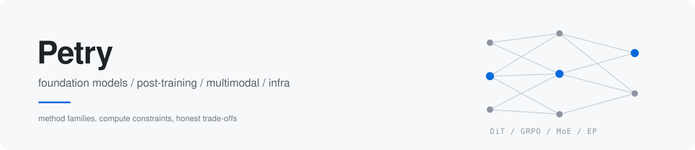

我在帮做基模和多模态的研究员，判断下一个值得投入的问题
foundation models post-training multimodal generation systems
方向 · 怎么读报告 · 我在找谁 · 怎么联系 · English
以公开技术报告、论文和开源实现为一手材料，跟踪基模与多模态方向的方法演进和组织分工，还原一条路线真正在解什么问题。
聊的是方法取舍、数据配比和算力约束，不是岗位清单。
| 方向 | 方法族与开放问题 |
|---|---|
| 多模态与视频生成 | DiT 与 flow matching、基于 GRPO 的奖励优化（Flow-GRPO / VideoReward）、时空 VAE 压缩比与长时序一致性；可控性和运动物理合理性仍缺可靠的自动评测代理 |
| 后训练与对齐 | DPO / PPO / GRPO 一族、RLVR 与可验证奖励、process reward model、扩散语言模型上的 RL 对齐（dLLM / EBPO）；reward hacking 与 KL 约束的真实代价 |
| 文本大模型 | MoE 专家路由与稀疏激活、预训练数据配比与 mid-training 退火、长上下文的 RoPE 外推与 KV cache 成本；scaling law 之外的数据墙 |
| 语音与 Infra | 端到端语音的离散 codec token 与流式推理；TP / PP / EP 并行策略、MFU、prefill-decode 分离，以及 SLO 约束下的单位 token 推理成本 |
置顶仓库是这套方法的产出：技术图谱、作者索引、方向时间线，全部基于公开资料。
从你在做的具体问题聊起，基模能力边界、奖励信号设计，或者一个方法在更大规模上还成不成立。可以直接问我某条路线走到哪一步、瓶颈在哪。
TP / PP / EP 怎么切、prefill-decode 分离是不是真落地、集群拓扑和 SLO 的实际约束，都能摊开讲，包括不那么好看的部分。
数据配比、时空压缩比、奖励模型怎么建、评测靠 VBench 还是人类偏好对齐，这些比岗位清单更值得先聊清楚。
不做任何决定也没关系，这类聊天我同样欢迎。
按方法族和算力约束做梳理，不按 JD 关键词做匹配。
能说清一条路线为什么被选中、代价是什么，以及同一技术维度上不同实现的取舍。
不合适会直说，不硬推。
| 方式 | 地址 |
|---|---|
| 邮箱 | 【待填：工作邮箱】 |
| 15 分钟预约 | 【待填：预约链接】 |
| 微信 / 飞书 | 【待填：二维码】 |
一对一沟通，不共享给任何第三方。可以先不透露姓名和现单位，只聊方向。你的信息不会出现在任何公开仓库或公开列表里。
预约 15 分钟，先匿名聊方向
最近更新 2026-11-05 | 最近在看扩散语言模型上的 RL 对齐（dLLM / EBPO），以及视频生成奖励模型在 flow matching 下的可迁移性与 reward hacking。
I track how foundation model and multimodal methods actually evolve, using public technical reports, papers and open-source implementations as primary sources.
What I cover — DiT and flow matching for video generation, GRPO-style reward optimization, RLVR and post-training alignment including diffusion language models, MoE routing, long-context extrapolation and KV cache economics, streaming speech codecs, and the systems side: TP / PP / EP parallelism, MFU, prefill-decode disaggregation.
How I read a report — archive by method family rather than product name, cross-check claims against OpenReview, arXiv, DBLP and institutional pages, keep ambiguous author candidates separate, and label every conclusion with a source and a confidence level.
The only ask — a 15-minute anonymous conversation. One-to-one, never shared with third parties, no need to reveal your name or current employer.
【待填：工作邮箱】 · 【待填：预约链接】
公开资料整理 | 不含候选人信息与在招团队细节